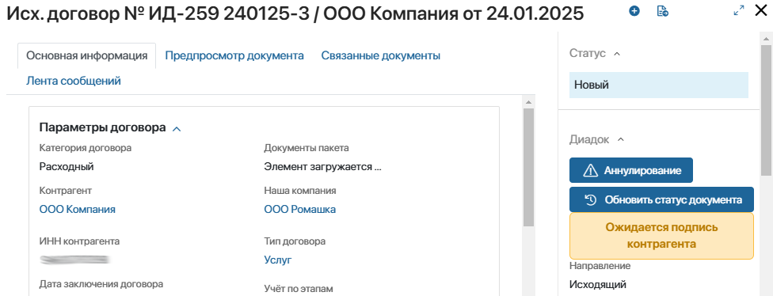
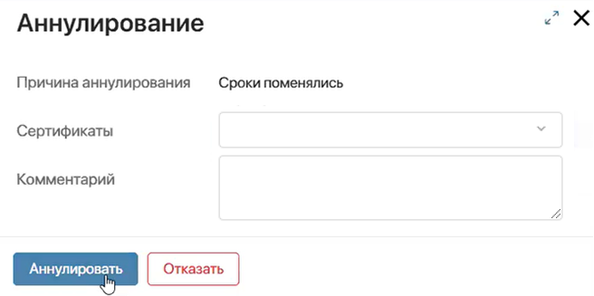
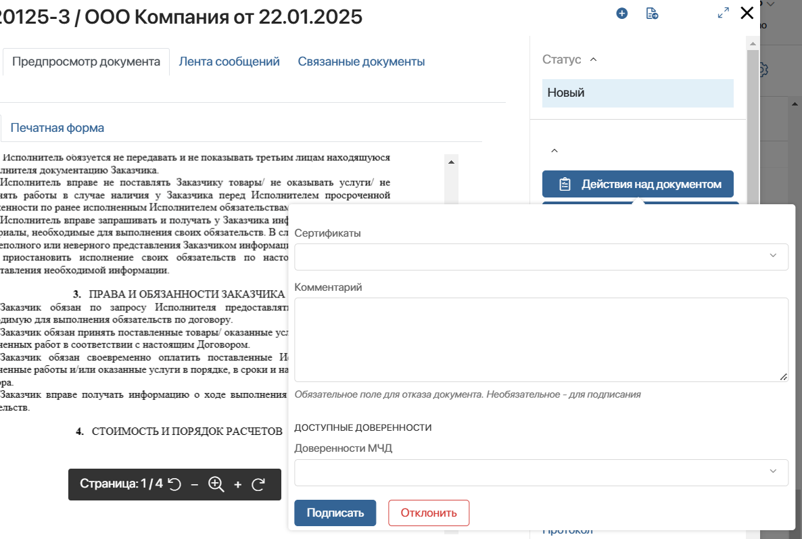
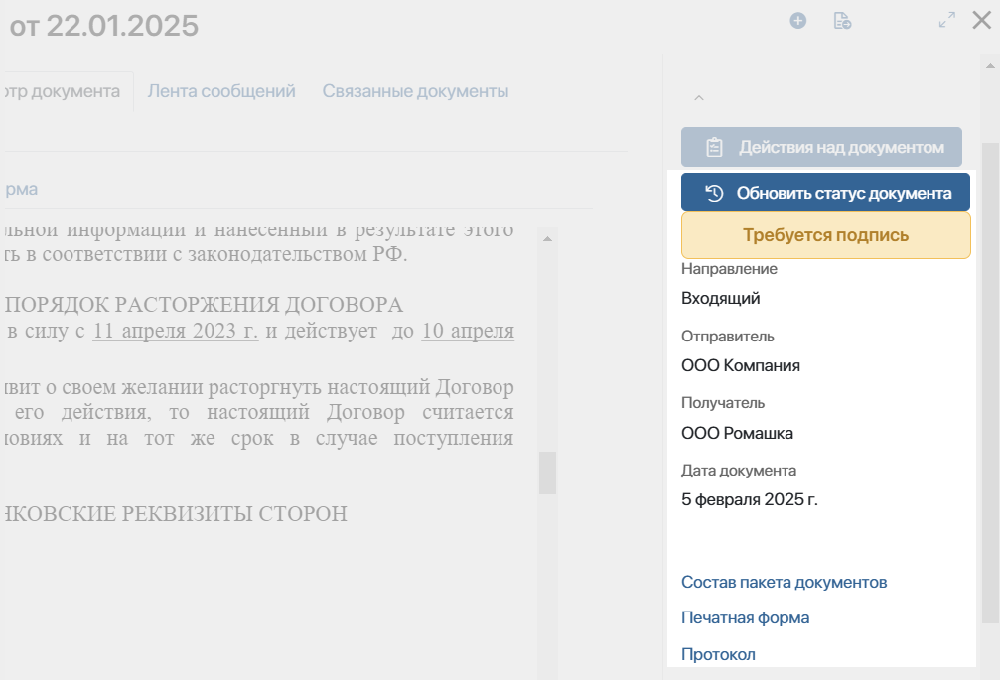
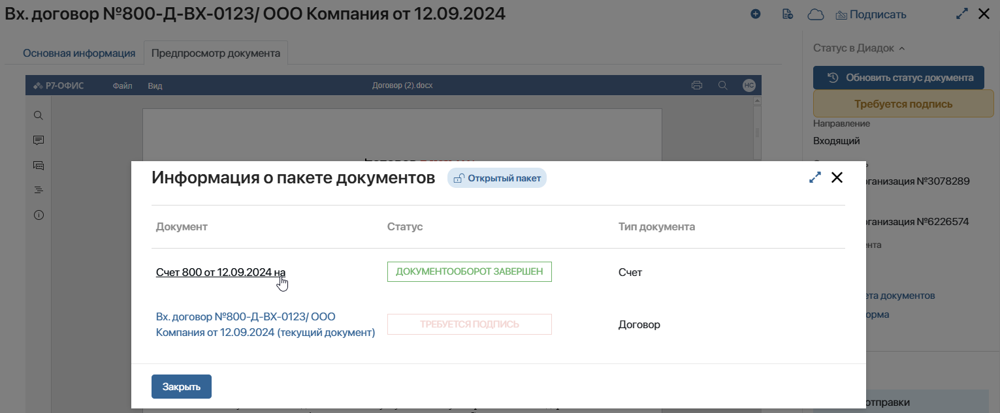

Если установлено и настроено решение Диадок версии 2.0, вы можете работать с юридически значимыми документами при помощи:
- виджетов в карточке элемента приложения;
- задач, которые назначаются в рамках бизнес-процессов.
Начало внимание
Перед работой с документами в Диадок убедитесь, что у вас настроена электронная подпись. Её можно запросить у Диадок, оформить у КриптоПро или Sign.me.
Конец внимание
Подключиться к аккаунту для обработки документов в Диадок
Чтобы вы могли выполнять действия с документами в Диадок из ELMA365, администратор системы настраивает доступ к аккаунтам в Диадок. Он может:
- включить персональную авторизацию — чтобы подписать, отклонить, аннулировать или отправить документ, вы подключаетесь к своему аккаунту в Диадок. Для этого на форме задачи или при использовании виджета в карточке документа нажмите кнопку Авторизоваться и укажите логин и пароль. Авторизация действует в течение трёх минут. Чтобы продолжить работу с документом через Диадок, нужно ввести данные аккаунта повторно;
- предоставить постоянный доступ к аккаунту в Диадок — администратор заносит вашу учётную запись в Диадок в специальный список в настройках модуля. После этого вы сможете сразу выполнять задачи или действия через виджеты в ELMA365. Документы и изменения их статусов будут отправляться в Диадок.
Отправить документ в Диадок
Если в карточке элемента сопоставленного приложения администратор системы разместил виджет Диадок действия, появится кнопка для отправки документа. Через виджет нельзя передать комплект документов. Чтобы отправить несколько связанных файлов вместе, администратору системы нужно настроить процесс с блоком Диадок отправить пакет документов.
Чтобы подписать исходящий документ и отправить его контрагенту в Диадок:
- Перейдите в карточку элемента сопоставленного приложения и на боковой панели нажмите кнопку .
- Откроется окно, в котором нужно разрешить доступ к сертификату для подписания.
- В карточке приложения заполните следующие поля настроек для подписи:

- Юридическое лицо* — укажите компанию из списка назначенных вам в настройках модуля Диадок 2.0. От её имени будут осуществляться действия в Диадок.
Поле заполняется автоматически, если доступно только одно юридическое лицо; - Абонентский ящик* — выберите абонентский ящик юридического лица в Диадок, от имени которой отправится документ. Если юридическое лицо выбрано автоматически, поле заполняется доступным значением из его карточки;
- Контрагент* — укажите название или ИНН контрагента, которому отправляете документ. Для выбора доступны только те контрагенты, которые добавлены в аккаунте Диадок. После ввода данных отобразится уведомление о результате поиска в Диадок. Если контрагент не найден, отправить документ нельзя.
Поле заполняется автоматически, если в настройках виджета указана переменная для поиска контрагента по ИНН;
- Подразделение контрагента (КПП) — по умолчанию задаётся Головное подразделение. Вы можете выбрать подразделение организации в Диадок, которому хотите отправить документ;
- Запросить подпись — включите опцию, чтобы контрагент, которому вы направляете документ, подписал его через Диадок;
- Сертификат — выберите доступный сертификат электронной подписи. В названии отображаются наименование организации, ФИО подписанта и срок действия сертификата. После ввода данных вы увидите уведомление о результате его проверки в ELMA365. Если выявлена ошибка, отправить документ нельзя;
- Доверенности МЧД — если на стороне Диадок вам выдана доверенность, выберите её. Подробнее об этом можно узнать на сайте Диадок.
- Нажмите кнопку Отправить документ в Диадок. Документ будет подписан с использованием указанного сертификата и направлен контрагенту.
Аннулировать документ
Если администратор системы разместил виджет Аннулирование Диадок в карточке элемента приложения, вы можете вручную выполнить действия по аннулированию документов.
Для этого:
- Откройте карточку документа и нажмите Аннулирование на боковой панели.
 - В открывшемся окне в зависимости от типа и статуса документа вы можете:

- аннулировать исходящий документ, если контрагент ещё не подписал его. Документу присвоится статус Аннулирован в Диадок;
- запросить аннулирование подписанного документа. Например, когда дополнительное соглашение по договору подписано через Диадок, но требуется внести в него изменения. Контрагент в Диадок увидит ваш запрос и сможет согласиться с аннулированием или отклонить его;
- рассмотреть запрос от контрагента на аннулирование подписанного документа.
Выполнить действия с документом
Если на форме просмотра администратор системы разместил виджет Диадок действия, то вы можете подписать или отклонить входящий документ в его карточке. Для этого:
- Перейдите в карточку элемента сопоставленного приложения и на боковой панели нажмите Действия над документом.
- В открывшемся окне разрешите доступ к сертификату подписания.
- Затем заполните поля:

- Сертификаты — выберите доступный сертификат электронной подписи. После ввода данных отобразится уведомление о результате его проверки в ELMA365. Если выявлена ошибка, отправить документ нельзя;
- Комментарий — укажите причину отказа. Контрагент получит комментарий вместе с документом;
- Содержание операции по СФД — поле отображается, если действие выполняется с формализованным документом. Укажите в нём дополнительную информацию о результатах рассмотрения документа;
- Доверенности МЧД — если на стороне Диадок вам выдана доверенность на подписание, выберите её. Подробнее об этом можно узнать на сайте Диадок.
- Нажмите одну из кнопок:
- Подписать — документ будет подписан в Диадок;
- Отклонить — контрагент в Диадок получит документ со статусом Отказано в подписи контрагенту.
Просмотреть данные документа из Диадок
Если на форме просмотра администратор системы разместил виджет Статус документа Диадок, в карточке элемента сопоставленного приложения можно:

- увидеть информацию из Диадок: статус и дату создания документа, его получателя и отправителя, а также документопоток;
- выполнить следующие действия с документом:
- Обновить статус документа — нажмите кнопку, чтобы получить актуальный статус из Диадок;
- Состав пакета документов — отображается, если документ получен от контрагента в составе пакета. Нажмите на ссылку, чтобы увидеть список файлов в пакете;
- Печатная форма — нажмите на ссылку, чтобы загрузить из Диадок .pdf-файл документа, на котором проставлен штамп с подробной информацией о сертификате электронной подписи;
- Протокол — нажмите на ссылку, чтобы загрузить из Диадок .zip-архив документооборота. В него входит печатная версия и оригинал документа, файлы электронных подписей, протокол.
Работа с пакетом входящих документов
При работе с документом, который входит в состав входящего пакета документов из Диадок, вы можете просмотреть все файлы этого пакета. Для этого на боковой панели карточки входящего документа нажмите кнопку Состав пакета документов. В открывшемся окне можно:

- перейти в карточку другого документа;
- просмотреть тип и статус документов, а также тип входящего пакета (опция сервиса Диадок):
- Открытый пакет — можно работать с любым документом по отдельности, а также изменять состав его пакета;
- Закрытый пакет — любые действия можно выполнять только со всем пакетом документов целиком. Изменять состав пакета нельзя.
Подробнее о типах пакетов входящих документов читайте в официальной документации Диадок.
Работа с Диадок в бизнес-процессах
Обрабатывать документы можно также в рамках задач, назначаемых в бизнес-процессах. Для этого в решении Диадок версии 2.0 предусмотрены графические элементы. С их помощью сотрудники могут получать следующие задачи:
- отклонить документ Диадок;
- отправить документ или пакет документов в Диадок;
- подписать документ Диадок;
- аннулировать документ в Диадок.
Кроме того, доступна работа с документами, поступающими из Диадок, в ходе бизнес-процессов, которые заданы в настройках модуля:
- процесс для входящего документа из Диадок;
- процесс для входящего пакета документов из Диадок;
- процесс для входящего аннулирования из Диадок.
Администратор системы может также настроить следующие действия в ходе бизнес-процесса:
- сформировать печатную форму подписанного контрагентом документа и сохранить её в контекстную переменную типа Файлы;
- получить архив документооборота в виде файла формата .zip. Его можно использовать для хранения полного пакета файлов по документу в электронном архиве.